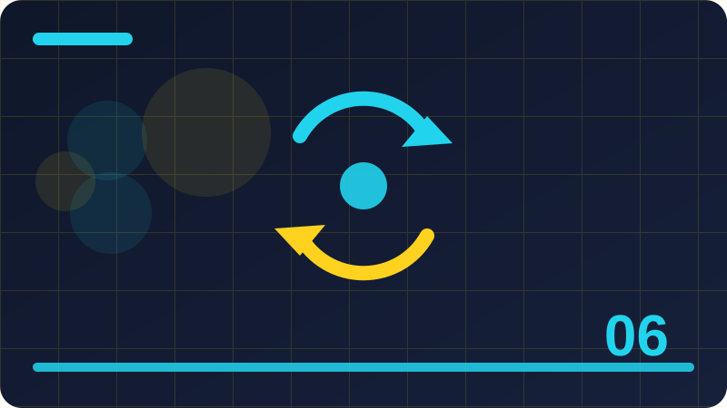

Chapter 6: Loops

Section 1
This section looks closely at Why repetition matters, one building block inside Loops. It is worth slowing down here, because ideas that feel small at first often turn up again in much larger programs, and a clear understanding now will save you confusion later. Think of Why repetition matters as a tool you are adding to a growing toolkit: you do not need to master every detail today, but you should know what it is for, when it helps, and what a sensible first example looks like. At its simplest, Why repetition matters is about making your intention clear to both the computer and the next person who reads your code. The computer follows instructions literally, so vague thinking becomes a visible mistake, while clear thinking becomes a program that behaves as you expected. That is why examples in this section are deliberately small: with only a few lines to watch, you can see cause and effect without distraction, and you can trace exactly how each part contributes to the result. A short example is the best way to make Why repetition matters concrete. Read the code slowly, line by line, and say what you think each line does before you run it. Then run it, compare the output with your prediction, and if they differ, treat that difference as useful information rather than a failure. Programmers learn more from a surprising result than from a result that merely confirms what they already believed, because surprise points to a gap in understanding. Beginners often stumble on Why repetition matters for the same few reasons, and naming those reasons in advance makes them easier to avoid. One common problem is rushing past the example without running it, which leaves a fragile understanding that collapses at the first small change. Another is copying code without understanding it, which works until the copied code needs to be adapted. A third is changing several things at once, which makes it impossible to tell which change caused a new result. Beyond the first example, Why repetition matters becomes useful when it is combined with ideas from earlier chapters. Programming is rarely about one idea in isolation; it is about combining small, reliable pieces into something larger. That is why this book returns to earlier ideas instead of leaving them behind. Each time you reuse an old idea in a new context, your understanding of both ideas deepens, and your programs become more flexible. To consolidate this section, try a tiny variation of the example before you continue. Change one value, one name, or one order, run the program again, and describe the difference in a sentence. That habit of deliberate variation is how programmers build intuition, and it takes only a few minutes. If you cannot explain the difference, you have found a useful question to investigate, and investigating it now will pay off in the next chapter.
for i in range(3):
print(i)Check: What is the main idea behind Why repetition matters in your own words?
Section 2
Begin with A loop in plain language, and with the question it helps you answer while you are learning Loops. Every new idea in programming earns its place by solving a real problem, not by sounding impressive, so this section starts from that problem. Once you can say in your own words why A loop in plain language exists, the details become much easier to remember, and the code you write afterwards tends to be clearer and more deliberate. The key to A loop in plain language is to connect the new idea with something you already understand. Programmers often explain a new concept by comparing it with an everyday action, such as sorting objects, following a recipe, or keeping a list, and that comparison helps at first. But an analogy is only a starting point: the section then moves from the everyday picture to the precise behaviour in Python, so that you are not misled when the real behaviour is slightly different from the picture. Work through the example for A loop in plain language as if you were the computer. Keep track of each value as it changes, and notice the order in which things happen, because order matters in programming far more than it does in ordinary writing. A line that looks harmless can change everything that follows, and a small change in order can turn a working program into one that behaves strangely. Tracing by hand is slow, but it builds the mental habit that makes debugging possible later. Watch out for the small details around A loop in plain language, because programming rewards attention to detail in a way that everyday language does not. A missing bracket, a misspelt name, or a value in the wrong place can stop a program or change its meaning, and the computer will not guess what you meant. This strictness can feel unfriendly at first, but it is also fair: the same code behaves the same way every time, so once you find a mistake, fixing it fixes the program reliably. Think about where A loop in plain language fits into a program you might actually want to write, such as a small tool, a game, a list manager, or a simple calculator. Real programs are built from the same building blocks you are learning here, repeated and combined in different ways. If you can picture a use for A loop in plain language outside this book, you are much more likely to remember it, and you will also start to notice it when you read other people's code. Before moving on, summarise A loop in plain language in two or three sentences of your own, without looking back at this section. Writing a summary forces you to decide what matters most, and it reveals gaps that silent reading can hide. If your summary feels vague, reread the example and try the variation exercise again.
count = 0
while count < 3:
print(count)
count += 1Check: When would you use A loop in plain language in a small program?
Section 3
In Loops, Repeating a fixed number of times is one of the ideas you will meet again and again, so it deserves a careful first look rather than a quick glance. This section explains the idea in plain language, shows a short example, and points out the mistakes that beginners most often make. You are not expected to memorise everything here; you are expected to recognise Repeating a fixed number of times when you see it, to use it in a small program, and to know where to look when you need a reminder. When you meet Repeating a fixed number of times, ask three questions before you write any code. First, what goes in? Second, what comes out? Third, what could go wrong if the input is empty, unusual, or not what you expected? Those three questions work for almost every topic in this book. They turn a passive reading exercise into an active investigation, and they prepare you to test your own code instead of hoping that it happens to be right. The example for Repeating a fixed number of times is intentionally ordinary, because ordinary examples reveal the normal behaviour you will rely on every day. Fancy examples can impress, but they often hide the simple rule underneath layers of detail. Once the simple rule is clear, you can apply it to harder problems with confidence, and you will recognise the same rule when it appears inside a longer program written by someone else. As you practise Repeating a fixed number of times, expect to make mistakes, and expect those mistakes to be informative. An error message is not a judgement on your ability; it is a clue, often pointing at the line where Python first noticed a problem. Read it, look at that line, and ask what Python expected to find there. Over time, you will start to recognise familiar messages and fix them quickly, which is one of the clearest signs that you are becoming a programmer. There is no single correct way to use Repeating a fixed number of times in every situation, and part of learning programming is developing judgement about trade-offs. A shorter solution is not always clearer, and a more general solution is not always better for a small task. For now, favour the version that you can explain to someone else, because code that is easy to explain is usually easy to fix, easy to extend, and easy to trust. Finally, remember that Repeating a fixed number of times is a step, not a destination. You will use it, forget parts of it, and relearn it in a richer context as your programs grow. That cycle is normal, and it is not a sign that you have failed to learn. Return to this section whenever you need it, use the idea in a real small program, and let repeated use turn a new idea into a familiar tool.
for word in ['a', 'b']:
print(word)Check: What mistake are beginners most likely to make with Repeating a fixed number of times?
Section 4
This section looks closely at Counting with a loop, one building block inside Loops. It is worth slowing down here, because ideas that feel small at first often turn up again in much larger programs, and a clear understanding now will save you confusion later. Think of Counting with a loop as a tool you are adding to a growing toolkit: you do not need to master every detail today, but you should know what it is for, when it helps, and what a sensible first example looks like. At its simplest, Counting with a loop is about making your intention clear to both the computer and the next person who reads your code. The computer follows instructions literally, so vague thinking becomes a visible mistake, while clear thinking becomes a program that behaves as you expected. That is why examples in this section are deliberately small: with only a few lines to watch, you can see cause and effect without distraction, and you can trace exactly how each part contributes to the result. A short example is the best way to make Counting with a loop concrete. Read the code slowly, line by line, and say what you think each line does before you run it. Then run it, compare the output with your prediction, and if they differ, treat that difference as useful information rather than a failure. Programmers learn more from a surprising result than from a result that merely confirms what they already believed, because surprise points to a gap in understanding. Beginners often stumble on Counting with a loop for the same few reasons, and naming those reasons in advance makes them easier to avoid. One common problem is rushing past the example without running it, which leaves a fragile understanding that collapses at the first small change. Another is copying code without understanding it, which works until the copied code needs to be adapted. A third is changing several things at once, which makes it impossible to tell which change caused a new result. Beyond the first example, Counting with a loop becomes useful when it is combined with ideas from earlier chapters. Programming is rarely about one idea in isolation; it is about combining small, reliable pieces into something larger. That is why this book returns to earlier ideas instead of leaving them behind. Each time you reuse an old idea in a new context, your understanding of both ideas deepens, and your programs become more flexible. To consolidate this section, try a tiny variation of the example before you continue. Change one value, one name, or one order, run the program again, and describe the difference in a sentence. That habit of deliberate variation is how programmers build intuition, and it takes only a few minutes. If you cannot explain the difference, you have found a useful question to investigate, and investigating it now will pay off in the next chapter.
total = 0
for n in [1, 2, 3]:
total += n
print(total)Check: How would you explain Counting with a loop to a friend who has never coded?
Section 5
Begin with Looping over a sequence, and with the question it helps you answer while you are learning Loops. Every new idea in programming earns its place by solving a real problem, not by sounding impressive, so this section starts from that problem. Once you can say in your own words why Looping over a sequence exists, the details become much easier to remember, and the code you write afterwards tends to be clearer and more deliberate. The key to Looping over a sequence is to connect the new idea with something you already understand. Programmers often explain a new concept by comparing it with an everyday action, such as sorting objects, following a recipe, or keeping a list, and that comparison helps at first. But an analogy is only a starting point: the section then moves from the everyday picture to the precise behaviour in Python, so that you are not misled when the real behaviour is slightly different from the picture. Work through the example for Looping over a sequence as if you were the computer. Keep track of each value as it changes, and notice the order in which things happen, because order matters in programming far more than it does in ordinary writing. A line that looks harmless can change everything that follows, and a small change in order can turn a working program into one that behaves strangely. Tracing by hand is slow, but it builds the mental habit that makes debugging possible later. Watch out for the small details around Looping over a sequence, because programming rewards attention to detail in a way that everyday language does not. A missing bracket, a misspelt name, or a value in the wrong place can stop a program or change its meaning, and the computer will not guess what you meant. This strictness can feel unfriendly at first, but it is also fair: the same code behaves the same way every time, so once you find a mistake, fixing it fixes the program reliably. Think about where Looping over a sequence fits into a program you might actually want to write, such as a small tool, a game, a list manager, or a simple calculator. Real programs are built from the same building blocks you are learning here, repeated and combined in different ways. If you can picture a use for Looping over a sequence outside this book, you are much more likely to remember it, and you will also start to notice it when you read other people's code. Before moving on, summarise Looping over a sequence in two or three sentences of your own, without looking back at this section. Writing a summary forces you to decide what matters most, and it reveals gaps that silent reading can hide. If your summary feels vague, reread the example and try the variation exercise again. A short, accurate summary is a better sign of learning than a long page of notes copied from the text.
for i in range(5):
print('hi')Check: What would you change in the example to test Looping over a sequence further?
Section 6
In Loops, The loop variable is one of the ideas you will meet again and again, so it deserves a careful first look rather than a quick glance. This section explains the idea in plain language, shows a short example, and points out the mistakes that beginners most often make. You are not expected to memorise everything here; you are expected to recognise The loop variable when you see it, to use it in a small program, and to know where to look when you need a reminder. When you meet The loop variable, ask three questions before you write any code. First, what goes in? Second, what comes out? Third, what could go wrong if the input is empty, unusual, or not what you expected? Those three questions work for almost every topic in this book. They turn a passive reading exercise into an active investigation, and they prepare you to test your own code instead of hoping that it happens to be right. The example for The loop variable is intentionally ordinary, because ordinary examples reveal the normal behaviour you will rely on every day. Fancy examples can impress, but they often hide the simple rule underneath layers of detail. Once the simple rule is clear, you can apply it to harder problems with confidence, and you will recognise the same rule when it appears inside a longer program written by someone else. As you practise The loop variable, expect to make mistakes, and expect those mistakes to be informative. An error message is not a judgement on your ability; it is a clue, often pointing at the line where Python first noticed a problem. Read it, look at that line, and ask what Python expected to find there. Over time, you will start to recognise familiar messages and fix them quickly, which is one of the clearest signs that you are becoming a programmer. There is no single correct way to use The loop variable in every situation, and part of learning programming is developing judgement about trade-offs. A shorter solution is not always clearer, and a more general solution is not always better for a small task. For now, favour the version that you can explain to someone else, because code that is easy to explain is usually easy to fix, easy to extend, and easy to trust. Finally, remember that The loop variable is a step, not a destination. You will use it, forget parts of it, and relearn it in a richer context as your programs grow. That cycle is normal, and it is not a sign that you have failed to learn. Return to this section whenever you need it, use the idea in a real small program, and let repeated use turn a new idea into a familiar tool. When you are stuck, shrink the problem until the smallest version works, then build it back up one step at a time.
for i in range(3):
print(i)Check: Why does The loop variable matter for programs you want to build later?
Section 7
This section looks closely at What happens each time round, one building block inside Loops. It is worth slowing down here, because ideas that feel small at first often turn up again in much larger programs, and a clear understanding now will save you confusion later. Think of What happens each time round as a tool you are adding to a growing toolkit: you do not need to master every detail today, but you should know what it is for, when it helps, and what a sensible first example looks like. At its simplest, What happens each time round is about making your intention clear to both the computer and the next person who reads your code. The computer follows instructions literally, so vague thinking becomes a visible mistake, while clear thinking becomes a program that behaves as you expected. That is why examples in this section are deliberately small: with only a few lines to watch, you can see cause and effect without distraction, and you can trace exactly how each part contributes to the result. A short example is the best way to make What happens each time round concrete. Read the code slowly, line by line, and say what you think each line does before you run it. Then run it, compare the output with your prediction, and if they differ, treat that difference as useful information rather than a failure. Programmers learn more from a surprising result than from a result that merely confirms what they already believed, because surprise points to a gap in understanding. Beginners often stumble on What happens each time round for the same few reasons, and naming those reasons in advance makes them easier to avoid. One common problem is rushing past the example without running it, which leaves a fragile understanding that collapses at the first small change. Another is copying code without understanding it, which works until the copied code needs to be adapted. A third is changing several things at once, which makes it impossible to tell which change caused a new result. Beyond the first example, What happens each time round becomes useful when it is combined with ideas from earlier chapters. Programming is rarely about one idea in isolation; it is about combining small, reliable pieces into something larger. That is why this book returns to earlier ideas instead of leaving them behind. Each time you reuse an old idea in a new context, your understanding of both ideas deepens, and your programs become more flexible. To consolidate this section, try a tiny variation of the example before you continue. Change one value, one name, or one order, run the program again, and describe the difference in a sentence. That habit of deliberate variation is how programmers build intuition, and it takes only a few minutes. If you cannot explain the difference, you have found a useful question to investigate, and investigating it now will pay off in the next chapter.
count = 0
while count < 3:
print(count)
count += 1Check: What is the main idea behind What happens each time round in your own words?
Section 8
Begin with Keeping a running total, and with the question it helps you answer while you are learning Loops. Every new idea in programming earns its place by solving a real problem, not by sounding impressive, so this section starts from that problem. Once you can say in your own words why Keeping a running total exists, the details become much easier to remember, and the code you write afterwards tends to be clearer and more deliberate. The key to Keeping a running total is to connect the new idea with something you already understand. Programmers often explain a new concept by comparing it with an everyday action, such as sorting objects, following a recipe, or keeping a list, and that comparison helps at first. But an analogy is only a starting point: the section then moves from the everyday picture to the precise behaviour in Python, so that you are not misled when the real behaviour is slightly different from the picture. Work through the example for Keeping a running total as if you were the computer. Keep track of each value as it changes, and notice the order in which things happen, because order matters in programming far more than it does in ordinary writing. A line that looks harmless can change everything that follows, and a small change in order can turn a working program into one that behaves strangely. Tracing by hand is slow, but it builds the mental habit that makes debugging possible later. Watch out for the small details around Keeping a running total, because programming rewards attention to detail in a way that everyday language does not. A missing bracket, a misspelt name, or a value in the wrong place can stop a program or change its meaning, and the computer will not guess what you meant. This strictness can feel unfriendly at first, but it is also fair: the same code behaves the same way every time, so once you find a mistake, fixing it fixes the program reliably. Think about where Keeping a running total fits into a program you might actually want to write, such as a small tool, a game, a list manager, or a simple calculator. Real programs are built from the same building blocks you are learning here, repeated and combined in different ways. If you can picture a use for Keeping a running total outside this book, you are much more likely to remember it, and you will also start to notice it when you read other people's code. Before moving on, summarise Keeping a running total in two or three sentences of your own, without looking back at this section. Writing a summary forces you to decide what matters most, and it reveals gaps that silent reading can hide. If your summary feels vague, reread the example and try the variation exercise again. A short, accurate summary is a better sign of learning than a long page of notes copied from the text.
for word in ['a', 'b']:
print(word)Check: When would you use Keeping a running total in a small program?
Section 9
In Loops, Counting matches in a loop is one of the ideas you will meet again and again, so it deserves a careful first look rather than a quick glance. This section explains the idea in plain language, shows a short example, and points out the mistakes that beginners most often make. You are not expected to memorise everything here; you are expected to recognise Counting matches in a loop when you see it, to use it in a small program, and to know where to look when you need a reminder. When you meet Counting matches in a loop, ask three questions before you write any code. First, what goes in? Second, what comes out? Third, what could go wrong if the input is empty, unusual, or not what you expected? Those three questions work for almost every topic in this book. They turn a passive reading exercise into an active investigation, and they prepare you to test your own code instead of hoping that it happens to be right. The example for Counting matches in a loop is intentionally ordinary, because ordinary examples reveal the normal behaviour you will rely on every day. Fancy examples can impress, but they often hide the simple rule underneath layers of detail. Once the simple rule is clear, you can apply it to harder problems with confidence, and you will recognise the same rule when it appears inside a longer program written by someone else. As you practise Counting matches in a loop, expect to make mistakes, and expect those mistakes to be informative. An error message is not a judgement on your ability; it is a clue, often pointing at the line where Python first noticed a problem. Read it, look at that line, and ask what Python expected to find there. Over time, you will start to recognise familiar messages and fix them quickly, which is one of the clearest signs that you are becoming a programmer. There is no single correct way to use Counting matches in a loop in every situation, and part of learning programming is developing judgement about trade-offs. A shorter solution is not always clearer, and a more general solution is not always better for a small task. For now, favour the version that you can explain to someone else, because code that is easy to explain is usually easy to fix, easy to extend, and easy to trust. Finally, remember that Counting matches in a loop is a step, not a destination. You will use it, forget parts of it, and relearn it in a richer context as your programs grow. That cycle is normal, and it is not a sign that you have failed to learn. Return to this section whenever you need it, use the idea in a real small program, and let repeated use turn a new idea into a familiar tool.
total = 0
for n in [1, 2, 3]:
total += n
print(total)Check: What mistake are beginners most likely to make with Counting matches in a loop?
Section 10
This section looks closely at Building a result step by step, one building block inside Loops. It is worth slowing down here, because ideas that feel small at first often turn up again in much larger programs, and a clear understanding now will save you confusion later. Think of Building a result step by step as a tool you are adding to a growing toolkit: you do not need to master every detail today, but you should know what it is for, when it helps, and what a sensible first example looks like. At its simplest, Building a result step by step is about making your intention clear to both the computer and the next person who reads your code. The computer follows instructions literally, so vague thinking becomes a visible mistake, while clear thinking becomes a program that behaves as you expected. That is why examples in this section are deliberately small: with only a few lines to watch, you can see cause and effect without distraction, and you can trace exactly how each part contributes to the result. A short example is the best way to make Building a result step by step concrete. Read the code slowly, line by line, and say what you think each line does before you run it. Then run it, compare the output with your prediction, and if they differ, treat that difference as useful information rather than a failure. Programmers learn more from a surprising result than from a result that merely confirms what they already believed, because surprise points to a gap in understanding. Beginners often stumble on Building a result step by step for the same few reasons, and naming those reasons in advance makes them easier to avoid. One common problem is rushing past the example without running it, which leaves a fragile understanding that collapses at the first small change. Another is copying code without understanding it, which works until the copied code needs to be adapted. A third is changing several things at once, which makes it impossible to tell which change caused a new result. Beyond the first example, Building a result step by step becomes useful when it is combined with ideas from earlier chapters. Programming is rarely about one idea in isolation; it is about combining small, reliable pieces into something larger. That is why this book returns to earlier ideas instead of leaving them behind. Each time you reuse an old idea in a new context, your understanding of both ideas deepens, and your programs become more flexible. To consolidate this section, try a tiny variation of the example before you continue. Change one value, one name, or one order, run the program again, and describe the difference in a sentence. That habit of deliberate variation is how programmers build intuition, and it takes only a few minutes.
for i in range(5):
print('hi')Check: How would you explain Building a result step by step to a friend who has never coded?
Section 11
Begin with Loops that never end, and with the question it helps you answer while you are learning Loops. Every new idea in programming earns its place by solving a real problem, not by sounding impressive, so this section starts from that problem. Once you can say in your own words why Loops that never end exists, the details become much easier to remember, and the code you write afterwards tends to be clearer and more deliberate. The key to Loops that never end is to connect the new idea with something you already understand. Programmers often explain a new concept by comparing it with an everyday action, such as sorting objects, following a recipe, or keeping a list, and that comparison helps at first. But an analogy is only a starting point: the section then moves from the everyday picture to the precise behaviour in Python, so that you are not misled when the real behaviour is slightly different from the picture. Work through the example for Loops that never end as if you were the computer. Keep track of each value as it changes, and notice the order in which things happen, because order matters in programming far more than it does in ordinary writing. A line that looks harmless can change everything that follows, and a small change in order can turn a working program into one that behaves strangely. Tracing by hand is slow, but it builds the mental habit that makes debugging possible later. Watch out for the small details around Loops that never end, because programming rewards attention to detail in a way that everyday language does not. A missing bracket, a misspelt name, or a value in the wrong place can stop a program or change its meaning, and the computer will not guess what you meant. This strictness can feel unfriendly at first, but it is also fair: the same code behaves the same way every time, so once you find a mistake, fixing it fixes the program reliably. Think about where Loops that never end fits into a program you might actually want to write, such as a small tool, a game, a list manager, or a simple calculator. Real programs are built from the same building blocks you are learning here, repeated and combined in different ways. If you can picture a use for Loops that never end outside this book, you are much more likely to remember it, and you will also start to notice it when you read other people's code. Before moving on, summarise Loops that never end in two or three sentences of your own, without looking back at this section. Writing a summary forces you to decide what matters most, and it reveals gaps that silent reading can hide. If your summary feels vague, reread the example and try the variation exercise again. A short, accurate summary is a better sign of learning than a long page of notes copied from the text.
for i in range(3):
print(i)Check: What would you change in the example to test Loops that never end further?
Section 12
In Loops, Stopping a loop early is one of the ideas you will meet again and again, so it deserves a careful first look rather than a quick glance. This section explains the idea in plain language, shows a short example, and points out the mistakes that beginners most often make. You are not expected to memorise everything here; you are expected to recognise Stopping a loop early when you see it, to use it in a small program, and to know where to look when you need a reminder. When you meet Stopping a loop early, ask three questions before you write any code. First, what goes in? Second, what comes out? Third, what could go wrong if the input is empty, unusual, or not what you expected? Those three questions work for almost every topic in this book. They turn a passive reading exercise into an active investigation, and they prepare you to test your own code instead of hoping that it happens to be right. The example for Stopping a loop early is intentionally ordinary, because ordinary examples reveal the normal behaviour you will rely on every day. Fancy examples can impress, but they often hide the simple rule underneath layers of detail. Once the simple rule is clear, you can apply it to harder problems with confidence, and you will recognise the same rule when it appears inside a longer program written by someone else. As you practise Stopping a loop early, expect to make mistakes, and expect those mistakes to be informative. An error message is not a judgement on your ability; it is a clue, often pointing at the line where Python first noticed a problem. Read it, look at that line, and ask what Python expected to find there. Over time, you will start to recognise familiar messages and fix them quickly, which is one of the clearest signs that you are becoming a programmer. There is no single correct way to use Stopping a loop early in every situation, and part of learning programming is developing judgement about trade-offs. A shorter solution is not always clearer, and a more general solution is not always better for a small task. For now, favour the version that you can explain to someone else, because code that is easy to explain is usually easy to fix, easy to extend, and easy to trust. Finally, remember that Stopping a loop early is a step, not a destination. You will use it, forget parts of it, and relearn it in a richer context as your programs grow. That cycle is normal, and it is not a sign that you have failed to learn. Return to this section whenever you need it, use the idea in a real small program, and let repeated use turn a new idea into a familiar tool.
count = 0
while count < 3:
print(count)
count += 1Check: Why does Stopping a loop early matter for programs you want to build later?
Section 13
This section looks closely at Skipping one round, one building block inside Loops. It is worth slowing down here, because ideas that feel small at first often turn up again in much larger programs, and a clear understanding now will save you confusion later. Think of Skipping one round as a tool you are adding to a growing toolkit: you do not need to master every detail today, but you should know what it is for, when it helps, and what a sensible first example looks like. At its simplest, Skipping one round is about making your intention clear to both the computer and the next person who reads your code. The computer follows instructions literally, so vague thinking becomes a visible mistake, while clear thinking becomes a program that behaves as you expected. That is why examples in this section are deliberately small: with only a few lines to watch, you can see cause and effect without distraction, and you can trace exactly how each part contributes to the result. A short example is the best way to make Skipping one round concrete. Read the code slowly, line by line, and say what you think each line does before you run it. Then run it, compare the output with your prediction, and if they differ, treat that difference as useful information rather than a failure. Programmers learn more from a surprising result than from a result that merely confirms what they already believed, because surprise points to a gap in understanding. Beginners often stumble on Skipping one round for the same few reasons, and naming those reasons in advance makes them easier to avoid. One common problem is rushing past the example without running it, which leaves a fragile understanding that collapses at the first small change. Another is copying code without understanding it, which works until the copied code needs to be adapted. A third is changing several things at once, which makes it impossible to tell which change caused a new result. Beyond the first example, Skipping one round becomes useful when it is combined with ideas from earlier chapters. Programming is rarely about one idea in isolation; it is about combining small, reliable pieces into something larger. That is why this book returns to earlier ideas instead of leaving them behind. Each time you reuse an old idea in a new context, your understanding of both ideas deepens, and your programs become more flexible. To consolidate this section, try a tiny variation of the example before you continue. Change one value, one name, or one order, run the program again, and describe the difference in a sentence. That habit of deliberate variation is how programmers build intuition, and it takes only a few minutes. If you cannot explain the difference, you have found a useful question to investigate, and investigating it now will pay off in the next chapter.
for word in ['a', 'b']:
print(word)Check: What is the main idea behind Skipping one round in your own words?
Section 14
Begin with While a condition holds, and with the question it helps you answer while you are learning Loops. Every new idea in programming earns its place by solving a real problem, not by sounding impressive, so this section starts from that problem. Once you can say in your own words why While a condition holds exists, the details become much easier to remember, and the code you write afterwards tends to be clearer and more deliberate. The key to While a condition holds is to connect the new idea with something you already understand. Programmers often explain a new concept by comparing it with an everyday action, such as sorting objects, following a recipe, or keeping a list, and that comparison helps at first. But an analogy is only a starting point: the section then moves from the everyday picture to the precise behaviour in Python, so that you are not misled when the real behaviour is slightly different from the picture. Work through the example for While a condition holds as if you were the computer. Keep track of each value as it changes, and notice the order in which things happen, because order matters in programming far more than it does in ordinary writing. A line that looks harmless can change everything that follows, and a small change in order can turn a working program into one that behaves strangely. Tracing by hand is slow, but it builds the mental habit that makes debugging possible later. Watch out for the small details around While a condition holds, because programming rewards attention to detail in a way that everyday language does not. A missing bracket, a misspelt name, or a value in the wrong place can stop a program or change its meaning, and the computer will not guess what you meant. This strictness can feel unfriendly at first, but it is also fair: the same code behaves the same way every time, so once you find a mistake, fixing it fixes the program reliably. Think about where While a condition holds fits into a program you might actually want to write, such as a small tool, a game, a list manager, or a simple calculator. Real programs are built from the same building blocks you are learning here, repeated and combined in different ways. If you can picture a use for While a condition holds outside this book, you are much more likely to remember it, and you will also start to notice it when you read other people's code. Before moving on, summarise While a condition holds in two or three sentences of your own, without looking back at this section. Writing a summary forces you to decide what matters most, and it reveals gaps that silent reading can hide. If your summary feels vague, reread the example and try the variation exercise again. A short, accurate summary is a better sign of learning than a long page of notes copied from the text.
total = 0
for n in [1, 2, 3]:
total += n
print(total)Check: When would you use While a condition holds in a small program?
Section 15
In Loops, Counting with while is one of the ideas you will meet again and again, so it deserves a careful first look rather than a quick glance. This section explains the idea in plain language, shows a short example, and points out the mistakes that beginners most often make. You are not expected to memorise everything here; you are expected to recognise Counting with while when you see it, to use it in a small program, and to know where to look when you need a reminder. When you meet Counting with while, ask three questions before you write any code. First, what goes in? Second, what comes out? Third, what could go wrong if the input is empty, unusual, or not what you expected? Those three questions work for almost every topic in this book. They turn a passive reading exercise into an active investigation, and they prepare you to test your own code instead of hoping that it happens to be right. The example for Counting with while is intentionally ordinary, because ordinary examples reveal the normal behaviour you will rely on every day. Fancy examples can impress, but they often hide the simple rule underneath layers of detail. Once the simple rule is clear, you can apply it to harder problems with confidence, and you will recognise the same rule when it appears inside a longer program written by someone else. As you practise Counting with while, expect to make mistakes, and expect those mistakes to be informative. An error message is not a judgement on your ability; it is a clue, often pointing at the line where Python first noticed a problem. Read it, look at that line, and ask what Python expected to find there. Over time, you will start to recognise familiar messages and fix them quickly, which is one of the clearest signs that you are becoming a programmer. There is no single correct way to use Counting with while in every situation, and part of learning programming is developing judgement about trade-offs. A shorter solution is not always clearer, and a more general solution is not always better for a small task. For now, favour the version that you can explain to someone else, because code that is easy to explain is usually easy to fix, easy to extend, and easy to trust. Finally, remember that Counting with while is a step, not a destination. You will use it, forget parts of it, and relearn it in a richer context as your programs grow. That cycle is normal, and it is not a sign that you have failed to learn. Return to this section whenever you need it, use the idea in a real small program, and let repeated use turn a new idea into a familiar tool. Ask what the program should do, what it actually does, and which single line is responsible for the difference.
for i in range(5):
print('hi')Check: What mistake are beginners most likely to make with Counting with while?
Section 16
This section looks closely at Waiting for the right input, one building block inside Loops. It is worth slowing down here, because ideas that feel small at first often turn up again in much larger programs, and a clear understanding now will save you confusion later. Think of Waiting for the right input as a tool you are adding to a growing toolkit: you do not need to master every detail today, but you should know what it is for, when it helps, and what a sensible first example looks like. At its simplest, Waiting for the right input is about making your intention clear to both the computer and the next person who reads your code. The computer follows instructions literally, so vague thinking becomes a visible mistake, while clear thinking becomes a program that behaves as you expected. That is why examples in this section are deliberately small: with only a few lines to watch, you can see cause and effect without distraction, and you can trace exactly how each part contributes to the result. A short example is the best way to make Waiting for the right input concrete. Read the code slowly, line by line, and say what you think each line does before you run it. Then run it, compare the output with your prediction, and if they differ, treat that difference as useful information rather than a failure. Programmers learn more from a surprising result than from a result that merely confirms what they already believed, because surprise points to a gap in understanding. Beginners often stumble on Waiting for the right input for the same few reasons, and naming those reasons in advance makes them easier to avoid. One common problem is rushing past the example without running it, which leaves a fragile understanding that collapses at the first small change. Another is copying code without understanding it, which works until the copied code needs to be adapted. A third is changing several things at once, which makes it impossible to tell which change caused a new result. Beyond the first example, Waiting for the right input becomes useful when it is combined with ideas from earlier chapters. Programming is rarely about one idea in isolation; it is about combining small, reliable pieces into something larger. That is why this book returns to earlier ideas instead of leaving them behind. Each time you reuse an old idea in a new context, your understanding of both ideas deepens, and your programs become more flexible. To consolidate this section, try a tiny variation of the example before you continue. Change one value, one name, or one order, run the program again, and describe the difference in a sentence. That habit of deliberate variation is how programmers build intuition, and it takes only a few minutes. If you cannot explain the difference, you have found a useful question to investigate, and investigating it now will pay off in the next chapter.
for i in range(3):
print(i)Check: How would you explain Waiting for the right input to a friend who has never coded?
Section 17
Begin with Sentinel values, and with the question it helps you answer while you are learning Loops. Every new idea in programming earns its place by solving a real problem, not by sounding impressive, so this section starts from that problem. Once you can say in your own words why Sentinel values exists, the details become much easier to remember, and the code you write afterwards tends to be clearer and more deliberate. The key to Sentinel values is to connect the new idea with something you already understand. Programmers often explain a new concept by comparing it with an everyday action, such as sorting objects, following a recipe, or keeping a list, and that comparison helps at first. But an analogy is only a starting point: the section then moves from the everyday picture to the precise behaviour in Python, so that you are not misled when the real behaviour is slightly different from the picture. Work through the example for Sentinel values as if you were the computer. Keep track of each value as it changes, and notice the order in which things happen, because order matters in programming far more than it does in ordinary writing. A line that looks harmless can change everything that follows, and a small change in order can turn a working program into one that behaves strangely. Tracing by hand is slow, but it builds the mental habit that makes debugging possible later. Watch out for the small details around Sentinel values, because programming rewards attention to detail in a way that everyday language does not. A missing bracket, a misspelt name, or a value in the wrong place can stop a program or change its meaning, and the computer will not guess what you meant. This strictness can feel unfriendly at first, but it is also fair: the same code behaves the same way every time, so once you find a mistake, fixing it fixes the program reliably. Think about where Sentinel values fits into a program you might actually want to write, such as a small tool, a game, a list manager, or a simple calculator. Real programs are built from the same building blocks you are learning here, repeated and combined in different ways. If you can picture a use for Sentinel values outside this book, you are much more likely to remember it, and you will also start to notice it when you read other people's code. Before moving on, summarise Sentinel values in two or three sentences of your own, without looking back at this section. Writing a summary forces you to decide what matters most, and it reveals gaps that silent reading can hide. If your summary feels vague, reread the example and try the variation exercise again. A short, accurate summary is a better sign of learning than a long page of notes copied from the text.
count = 0
while count < 3:
print(count)
count += 1Check: What would you change in the example to test Sentinel values further?
Section 18
In Loops, Loops inside loops is one of the ideas you will meet again and again, so it deserves a careful first look rather than a quick glance. This section explains the idea in plain language, shows a short example, and points out the mistakes that beginners most often make. You are not expected to memorise everything here; you are expected to recognise Loops inside loops when you see it, to use it in a small program, and to know where to look when you need a reminder. When you meet Loops inside loops, ask three questions before you write any code. First, what goes in? Second, what comes out? Third, what could go wrong if the input is empty, unusual, or not what you expected? Those three questions work for almost every topic in this book. They turn a passive reading exercise into an active investigation, and they prepare you to test your own code instead of hoping that it happens to be right. The example for Loops inside loops is intentionally ordinary, because ordinary examples reveal the normal behaviour you will rely on every day. Fancy examples can impress, but they often hide the simple rule underneath layers of detail. Once the simple rule is clear, you can apply it to harder problems with confidence, and you will recognise the same rule when it appears inside a longer program written by someone else. As you practise Loops inside loops, expect to make mistakes, and expect those mistakes to be informative. An error message is not a judgement on your ability; it is a clue, often pointing at the line where Python first noticed a problem. Read it, look at that line, and ask what Python expected to find there. Over time, you will start to recognise familiar messages and fix them quickly, which is one of the clearest signs that you are becoming a programmer. There is no single correct way to use Loops inside loops in every situation, and part of learning programming is developing judgement about trade-offs. A shorter solution is not always clearer, and a more general solution is not always better for a small task. For now, favour the version that you can explain to someone else, because code that is easy to explain is usually easy to fix, easy to extend, and easy to trust. Finally, remember that Loops inside loops is a step, not a destination. You will use it, forget parts of it, and relearn it in a richer context as your programs grow. That cycle is normal, and it is not a sign that you have failed to learn. Return to this section whenever you need it, use the idea in a real small program, and let repeated use turn a new idea into a familiar tool. Small experiments teach more than long explanations, so change one thing at a time and watch the result carefully.
for word in ['a', 'b']:
print(word)Check: Why does Loops inside loops matter for programs you want to build later?
Section 19
This section looks closely at Drawing rows and columns, one building block inside Loops. It is worth slowing down here, because ideas that feel small at first often turn up again in much larger programs, and a clear understanding now will save you confusion later. Think of Drawing rows and columns as a tool you are adding to a growing toolkit: you do not need to master every detail today, but you should know what it is for, when it helps, and what a sensible first example looks like. At its simplest, Drawing rows and columns is about making your intention clear to both the computer and the next person who reads your code. The computer follows instructions literally, so vague thinking becomes a visible mistake, while clear thinking becomes a program that behaves as you expected. That is why examples in this section are deliberately small: with only a few lines to watch, you can see cause and effect without distraction, and you can trace exactly how each part contributes to the result. A short example is the best way to make Drawing rows and columns concrete. Read the code slowly, line by line, and say what you think each line does before you run it. Then run it, compare the output with your prediction, and if they differ, treat that difference as useful information rather than a failure. Programmers learn more from a surprising result than from a result that merely confirms what they already believed, because surprise points to a gap in understanding. Beginners often stumble on Drawing rows and columns for the same few reasons, and naming those reasons in advance makes them easier to avoid. One common problem is rushing past the example without running it, which leaves a fragile understanding that collapses at the first small change. Another is copying code without understanding it, which works until the copied code needs to be adapted. A third is changing several things at once, which makes it impossible to tell which change caused a new result. Beyond the first example, Drawing rows and columns becomes useful when it is combined with ideas from earlier chapters. Programming is rarely about one idea in isolation; it is about combining small, reliable pieces into something larger. That is why this book returns to earlier ideas instead of leaving them behind. Each time you reuse an old idea in a new context, your understanding of both ideas deepens, and your programs become more flexible. To consolidate this section, try a tiny variation of the example before you continue. Change one value, one name, or one order, run the program again, and describe the difference in a sentence. That habit of deliberate variation is how programmers build intuition, and it takes only a few minutes. If you cannot explain the difference, you have found a useful question to investigate, and investigating it now will pay off in the next chapter.
total = 0
for n in [1, 2, 3]:
total += n
print(total)Check: What is the main idea behind Drawing rows and columns in your own words?
Section 20
Begin with Tables made with loops, and with the question it helps you answer while you are learning Loops. Every new idea in programming earns its place by solving a real problem, not by sounding impressive, so this section starts from that problem. Once you can say in your own words why Tables made with loops exists, the details become much easier to remember, and the code you write afterwards tends to be clearer and more deliberate. The key to Tables made with loops is to connect the new idea with something you already understand. Programmers often explain a new concept by comparing it with an everyday action, such as sorting objects, following a recipe, or keeping a list, and that comparison helps at first. But an analogy is only a starting point: the section then moves from the everyday picture to the precise behaviour in Python, so that you are not misled when the real behaviour is slightly different from the picture. Work through the example for Tables made with loops as if you were the computer. Keep track of each value as it changes, and notice the order in which things happen, because order matters in programming far more than it does in ordinary writing. A line that looks harmless can change everything that follows, and a small change in order can turn a working program into one that behaves strangely. Tracing by hand is slow, but it builds the mental habit that makes debugging possible later. Watch out for the small details around Tables made with loops, because programming rewards attention to detail in a way that everyday language does not. A missing bracket, a misspelt name, or a value in the wrong place can stop a program or change its meaning, and the computer will not guess what you meant. This strictness can feel unfriendly at first, but it is also fair: the same code behaves the same way every time, so once you find a mistake, fixing it fixes the program reliably. Think about where Tables made with loops fits into a program you might actually want to write, such as a small tool, a game, a list manager, or a simple calculator. Real programs are built from the same building blocks you are learning here, repeated and combined in different ways. If you can picture a use for Tables made with loops outside this book, you are much more likely to remember it, and you will also start to notice it when you read other people's code. Before moving on, summarise Tables made with loops in two or three sentences of your own, without looking back at this section. Writing a summary forces you to decide what matters most, and it reveals gaps that silent reading can hide. If your summary feels vague, reread the example and try the variation exercise again. A short, accurate summary is a better sign of learning than a long page of notes copied from the text.
for i in range(5):
print('hi')Check: When would you use Tables made with loops in a small program?
Section 21
In Loops, Patterns from repetition is one of the ideas you will meet again and again, so it deserves a careful first look rather than a quick glance. This section explains the idea in plain language, shows a short example, and points out the mistakes that beginners most often make. You are not expected to memorise everything here; you are expected to recognise Patterns from repetition when you see it, to use it in a small program, and to know where to look when you need a reminder. When you meet Patterns from repetition, ask three questions before you write any code. First, what goes in? Second, what comes out? Third, what could go wrong if the input is empty, unusual, or not what you expected? Those three questions work for almost every topic in this book. They turn a passive reading exercise into an active investigation, and they prepare you to test your own code instead of hoping that it happens to be right. The example for Patterns from repetition is intentionally ordinary, because ordinary examples reveal the normal behaviour you will rely on every day. Fancy examples can impress, but they often hide the simple rule underneath layers of detail. Once the simple rule is clear, you can apply it to harder problems with confidence, and you will recognise the same rule when it appears inside a longer program written by someone else. As you practise Patterns from repetition, expect to make mistakes, and expect those mistakes to be informative. An error message is not a judgement on your ability; it is a clue, often pointing at the line where Python first noticed a problem. Read it, look at that line, and ask what Python expected to find there. Over time, you will start to recognise familiar messages and fix them quickly, which is one of the clearest signs that you are becoming a programmer. There is no single correct way to use Patterns from repetition in every situation, and part of learning programming is developing judgement about trade-offs. A shorter solution is not always clearer, and a more general solution is not always better for a small task. For now, favour the version that you can explain to someone else, because code that is easy to explain is usually easy to fix, easy to extend, and easy to trust. Finally, remember that Patterns from repetition is a step, not a destination. You will use it, forget parts of it, and relearn it in a richer context as your programs grow. That cycle is normal, and it is not a sign that you have failed to learn. Return to this section whenever you need it, use the idea in a real small program, and let repeated use turn a new idea into a familiar tool. Good code is easy to read later, so favour clear names and short steps over clever shortcuts that hide the meaning.
for i in range(3):
print(i)Check: What mistake are beginners most likely to make with Patterns from repetition?
Section 22
This section looks closely at Searching with a loop, one building block inside Loops. It is worth slowing down here, because ideas that feel small at first often turn up again in much larger programs, and a clear understanding now will save you confusion later. Think of Searching with a loop as a tool you are adding to a growing toolkit: you do not need to master every detail today, but you should know what it is for, when it helps, and what a sensible first example looks like. At its simplest, Searching with a loop is about making your intention clear to both the computer and the next person who reads your code. The computer follows instructions literally, so vague thinking becomes a visible mistake, while clear thinking becomes a program that behaves as you expected. That is why examples in this section are deliberately small: with only a few lines to watch, you can see cause and effect without distraction, and you can trace exactly how each part contributes to the result. A short example is the best way to make Searching with a loop concrete. Read the code slowly, line by line, and say what you think each line does before you run it. Then run it, compare the output with your prediction, and if they differ, treat that difference as useful information rather than a failure. Programmers learn more from a surprising result than from a result that merely confirms what they already believed, because surprise points to a gap in understanding. Beginners often stumble on Searching with a loop for the same few reasons, and naming those reasons in advance makes them easier to avoid. One common problem is rushing past the example without running it, which leaves a fragile understanding that collapses at the first small change. Another is copying code without understanding it, which works until the copied code needs to be adapted. A third is changing several things at once, which makes it impossible to tell which change caused a new result. Beyond the first example, Searching with a loop becomes useful when it is combined with ideas from earlier chapters. Programming is rarely about one idea in isolation; it is about combining small, reliable pieces into something larger. That is why this book returns to earlier ideas instead of leaving them behind. Each time you reuse an old idea in a new context, your understanding of both ideas deepens, and your programs become more flexible. To consolidate this section, try a tiny variation of the example before you continue. Change one value, one name, or one order, run the program again, and describe the difference in a sentence. That habit of deliberate variation is how programmers build intuition, and it takes only a few minutes. If you cannot explain the difference, you have found a useful question to investigate, and investigating it now will pay off in the next chapter.
count = 0
while count < 3:
print(count)
count += 1Check: How would you explain Searching with a loop to a friend who has never coded?
Section 23
Begin with Finding a maximum with a loop, and with the question it helps you answer while you are learning Loops. Every new idea in programming earns its place by solving a real problem, not by sounding impressive, so this section starts from that problem. Once you can say in your own words why Finding a maximum with a loop exists, the details become much easier to remember, and the code you write afterwards tends to be clearer and more deliberate. The key to Finding a maximum with a loop is to connect the new idea with something you already understand. Programmers often explain a new concept by comparing it with an everyday action, such as sorting objects, following a recipe, or keeping a list, and that comparison helps at first. But an analogy is only a starting point: the section then moves from the everyday picture to the precise behaviour in Python, so that you are not misled when the real behaviour is slightly different from the picture. Work through the example for Finding a maximum with a loop as if you were the computer. Keep track of each value as it changes, and notice the order in which things happen, because order matters in programming far more than it does in ordinary writing. A line that looks harmless can change everything that follows, and a small change in order can turn a working program into one that behaves strangely. Tracing by hand is slow, but it builds the mental habit that makes debugging possible later. Watch out for the small details around Finding a maximum with a loop, because programming rewards attention to detail in a way that everyday language does not. A missing bracket, a misspelt name, or a value in the wrong place can stop a program or change its meaning, and the computer will not guess what you meant. This strictness can feel unfriendly at first, but it is also fair: the same code behaves the same way every time, so once you find a mistake, fixing it fixes the program reliably. Think about where Finding a maximum with a loop fits into a program you might actually want to write, such as a small tool, a game, a list manager, or a simple calculator. Real programs are built from the same building blocks you are learning here, repeated and combined in different ways. If you can picture a use for Finding a maximum with a loop outside this book, you are much more likely to remember it, and you will also start to notice it when you read other people's code. Before moving on, summarise Finding a maximum with a loop in two or three sentences of your own, without looking back at this section. Writing a summary forces you to decide what matters most, and it reveals gaps that silent reading can hide. If your summary feels vague, reread the example and try the variation exercise again.
for word in ['a', 'b']:
print(word)Check: What would you change in the example to test Finding a maximum with a loop further?
Section 24
In Loops, Finding a minimum with a loop is one of the ideas you will meet again and again, so it deserves a careful first look rather than a quick glance. This section explains the idea in plain language, shows a short example, and points out the mistakes that beginners most often make. You are not expected to memorise everything here; you are expected to recognise Finding a minimum with a loop when you see it, to use it in a small program, and to know where to look when you need a reminder. When you meet Finding a minimum with a loop, ask three questions before you write any code. First, what goes in? Second, what comes out? Third, what could go wrong if the input is empty, unusual, or not what you expected? Those three questions work for almost every topic in this book. They turn a passive reading exercise into an active investigation, and they prepare you to test your own code instead of hoping that it happens to be right. The example for Finding a minimum with a loop is intentionally ordinary, because ordinary examples reveal the normal behaviour you will rely on every day. Fancy examples can impress, but they often hide the simple rule underneath layers of detail. Once the simple rule is clear, you can apply it to harder problems with confidence, and you will recognise the same rule when it appears inside a longer program written by someone else. As you practise Finding a minimum with a loop, expect to make mistakes, and expect those mistakes to be informative. An error message is not a judgement on your ability; it is a clue, often pointing at the line where Python first noticed a problem. Read it, look at that line, and ask what Python expected to find there. Over time, you will start to recognise familiar messages and fix them quickly, which is one of the clearest signs that you are becoming a programmer. There is no single correct way to use Finding a minimum with a loop in every situation, and part of learning programming is developing judgement about trade-offs. A shorter solution is not always clearer, and a more general solution is not always better for a small task. For now, favour the version that you can explain to someone else, because code that is easy to explain is usually easy to fix, easy to extend, and easy to trust. Finally, remember that Finding a minimum with a loop is a step, not a destination. You will use it, forget parts of it, and relearn it in a richer context as your programs grow. That cycle is normal, and it is not a sign that you have failed to learn. Return to this section whenever you need it, use the idea in a real small program, and let repeated use turn a new idea into a familiar tool.
total = 0
for n in [1, 2, 3]:
total += n
print(total)Check: Why does Finding a minimum with a loop matter for programs you want to build later?
Section 25
This section looks closely at Checking every item, one building block inside Loops. It is worth slowing down here, because ideas that feel small at first often turn up again in much larger programs, and a clear understanding now will save you confusion later. Think of Checking every item as a tool you are adding to a growing toolkit: you do not need to master every detail today, but you should know what it is for, when it helps, and what a sensible first example looks like. At its simplest, Checking every item is about making your intention clear to both the computer and the next person who reads your code. The computer follows instructions literally, so vague thinking becomes a visible mistake, while clear thinking becomes a program that behaves as you expected. That is why examples in this section are deliberately small: with only a few lines to watch, you can see cause and effect without distraction, and you can trace exactly how each part contributes to the result. A short example is the best way to make Checking every item concrete. Read the code slowly, line by line, and say what you think each line does before you run it. Then run it, compare the output with your prediction, and if they differ, treat that difference as useful information rather than a failure. Programmers learn more from a surprising result than from a result that merely confirms what they already believed, because surprise points to a gap in understanding. Beginners often stumble on Checking every item for the same few reasons, and naming those reasons in advance makes them easier to avoid. One common problem is rushing past the example without running it, which leaves a fragile understanding that collapses at the first small change. Another is copying code without understanding it, which works until the copied code needs to be adapted. A third is changing several things at once, which makes it impossible to tell which change caused a new result. Beyond the first example, Checking every item becomes useful when it is combined with ideas from earlier chapters. Programming is rarely about one idea in isolation; it is about combining small, reliable pieces into something larger. That is why this book returns to earlier ideas instead of leaving them behind. Each time you reuse an old idea in a new context, your understanding of both ideas deepens, and your programs become more flexible. To consolidate this section, try a tiny variation of the example before you continue. Change one value, one name, or one order, run the program again, and describe the difference in a sentence. That habit of deliberate variation is how programmers build intuition, and it takes only a few minutes. If you cannot explain the difference, you have found a useful question to investigate, and investigating it now will pay off in the next chapter.
for i in range(5):
print('hi')Check: What is the main idea behind Checking every item in your own words?
Section 26
Begin with Loops and lists preview, and with the question it helps you answer while you are learning Loops. Every new idea in programming earns its place by solving a real problem, not by sounding impressive, so this section starts from that problem. Once you can say in your own words why Loops and lists preview exists, the details become much easier to remember, and the code you write afterwards tends to be clearer and more deliberate. The key to Loops and lists preview is to connect the new idea with something you already understand. Programmers often explain a new concept by comparing it with an everyday action, such as sorting objects, following a recipe, or keeping a list, and that comparison helps at first. But an analogy is only a starting point: the section then moves from the everyday picture to the precise behaviour in Python, so that you are not misled when the real behaviour is slightly different from the picture. Work through the example for Loops and lists preview as if you were the computer. Keep track of each value as it changes, and notice the order in which things happen, because order matters in programming far more than it does in ordinary writing. A line that looks harmless can change everything that follows, and a small change in order can turn a working program into one that behaves strangely. Tracing by hand is slow, but it builds the mental habit that makes debugging possible later. Watch out for the small details around Loops and lists preview, because programming rewards attention to detail in a way that everyday language does not. A missing bracket, a misspelt name, or a value in the wrong place can stop a program or change its meaning, and the computer will not guess what you meant. This strictness can feel unfriendly at first, but it is also fair: the same code behaves the same way every time, so once you find a mistake, fixing it fixes the program reliably. Think about where Loops and lists preview fits into a program you might actually want to write, such as a small tool, a game, a list manager, or a simple calculator. Real programs are built from the same building blocks you are learning here, repeated and combined in different ways. If you can picture a use for Loops and lists preview outside this book, you are much more likely to remember it, and you will also start to notice it when you read other people's code. Before moving on, summarise Loops and lists preview in two or three sentences of your own, without looking back at this section. Writing a summary forces you to decide what matters most, and it reveals gaps that silent reading can hide. If your summary feels vague, reread the example and try the variation exercise again. A short, accurate summary is a better sign of learning than a long page of notes copied from the text.
for i in range(3):
print(i)Check: When would you use Loops and lists preview in a small program?
Section 27
In Loops, Ranges in Python is one of the ideas you will meet again and again, so it deserves a careful first look rather than a quick glance. This section explains the idea in plain language, shows a short example, and points out the mistakes that beginners most often make. You are not expected to memorise everything here; you are expected to recognise Ranges in Python when you see it, to use it in a small program, and to know where to look when you need a reminder. When you meet Ranges in Python, ask three questions before you write any code. First, what goes in? Second, what comes out? Third, what could go wrong if the input is empty, unusual, or not what you expected? Those three questions work for almost every topic in this book. They turn a passive reading exercise into an active investigation, and they prepare you to test your own code instead of hoping that it happens to be right. The example for Ranges in Python is intentionally ordinary, because ordinary examples reveal the normal behaviour you will rely on every day. Fancy examples can impress, but they often hide the simple rule underneath layers of detail. Once the simple rule is clear, you can apply it to harder problems with confidence, and you will recognise the same rule when it appears inside a longer program written by someone else. As you practise Ranges in Python, expect to make mistakes, and expect those mistakes to be informative. An error message is not a judgement on your ability; it is a clue, often pointing at the line where Python first noticed a problem. Read it, look at that line, and ask what Python expected to find there. Over time, you will start to recognise familiar messages and fix them quickly, which is one of the clearest signs that you are becoming a programmer. There is no single correct way to use Ranges in Python in every situation, and part of learning programming is developing judgement about trade-offs. A shorter solution is not always clearer, and a more general solution is not always better for a small task. For now, favour the version that you can explain to someone else, because code that is easy to explain is usually easy to fix, easy to extend, and easy to trust. Finally, remember that Ranges in Python is a step, not a destination. You will use it, forget parts of it, and relearn it in a richer context as your programs grow. That cycle is normal, and it is not a sign that you have failed to learn. Return to this section whenever you need it, use the idea in a real small program, and let repeated use turn a new idea into a familiar tool. If the result surprises you, read the code again slowly, as if you were explaining each line to a friend.
count = 0
while count < 3:
print(count)
count += 1Check: What mistake are beginners most likely to make with Ranges in Python?
Section 28
This section looks closely at Starting a range later, one building block inside Loops. It is worth slowing down here, because ideas that feel small at first often turn up again in much larger programs, and a clear understanding now will save you confusion later. Think of Starting a range later as a tool you are adding to a growing toolkit: you do not need to master every detail today, but you should know what it is for, when it helps, and what a sensible first example looks like. At its simplest, Starting a range later is about making your intention clear to both the computer and the next person who reads your code. The computer follows instructions literally, so vague thinking becomes a visible mistake, while clear thinking becomes a program that behaves as you expected. That is why examples in this section are deliberately small: with only a few lines to watch, you can see cause and effect without distraction, and you can trace exactly how each part contributes to the result. A short example is the best way to make Starting a range later concrete. Read the code slowly, line by line, and say what you think each line does before you run it. Then run it, compare the output with your prediction, and if they differ, treat that difference as useful information rather than a failure. Programmers learn more from a surprising result than from a result that merely confirms what they already believed, because surprise points to a gap in understanding. Beginners often stumble on Starting a range later for the same few reasons, and naming those reasons in advance makes them easier to avoid. One common problem is rushing past the example without running it, which leaves a fragile understanding that collapses at the first small change. Another is copying code without understanding it, which works until the copied code needs to be adapted. A third is changing several things at once, which makes it impossible to tell which change caused a new result. Beyond the first example, Starting a range later becomes useful when it is combined with ideas from earlier chapters. Programming is rarely about one idea in isolation; it is about combining small, reliable pieces into something larger. That is why this book returns to earlier ideas instead of leaving them behind. Each time you reuse an old idea in a new context, your understanding of both ideas deepens, and your programs become more flexible. To consolidate this section, try a tiny variation of the example before you continue. Change one value, one name, or one order, run the program again, and describe the difference in a sentence. That habit of deliberate variation is how programmers build intuition, and it takes only a few minutes. If you cannot explain the difference, you have found a useful question to investigate, and investigating it now will pay off in the next chapter.
for word in ['a', 'b']:
print(word)Check: How would you explain Starting a range later to a friend who has never coded?
Section 29
Begin with Stepping through a range, and with the question it helps you answer while you are learning Loops. Every new idea in programming earns its place by solving a real problem, not by sounding impressive, so this section starts from that problem. Once you can say in your own words why Stepping through a range exists, the details become much easier to remember, and the code you write afterwards tends to be clearer and more deliberate. The key to Stepping through a range is to connect the new idea with something you already understand. Programmers often explain a new concept by comparing it with an everyday action, such as sorting objects, following a recipe, or keeping a list, and that comparison helps at first. But an analogy is only a starting point: the section then moves from the everyday picture to the precise behaviour in Python, so that you are not misled when the real behaviour is slightly different from the picture. Work through the example for Stepping through a range as if you were the computer. Keep track of each value as it changes, and notice the order in which things happen, because order matters in programming far more than it does in ordinary writing. A line that looks harmless can change everything that follows, and a small change in order can turn a working program into one that behaves strangely. Tracing by hand is slow, but it builds the mental habit that makes debugging possible later. Watch out for the small details around Stepping through a range, because programming rewards attention to detail in a way that everyday language does not. A missing bracket, a misspelt name, or a value in the wrong place can stop a program or change its meaning, and the computer will not guess what you meant. This strictness can feel unfriendly at first, but it is also fair: the same code behaves the same way every time, so once you find a mistake, fixing it fixes the program reliably. Think about where Stepping through a range fits into a program you might actually want to write, such as a small tool, a game, a list manager, or a simple calculator. Real programs are built from the same building blocks you are learning here, repeated and combined in different ways. If you can picture a use for Stepping through a range outside this book, you are much more likely to remember it, and you will also start to notice it when you read other people's code. Before moving on, summarise Stepping through a range in two or three sentences of your own, without looking back at this section. Writing a summary forces you to decide what matters most, and it reveals gaps that silent reading can hide. If your summary feels vague, reread the example and try the variation exercise again. A short, accurate summary is a better sign of learning than a long page of notes copied from the text.
total = 0
for n in [1, 2, 3]:
total += n
print(total)Check: What would you change in the example to test Stepping through a range further?
Section 30
In Loops, Ranges in reverse is one of the ideas you will meet again and again, so it deserves a careful first look rather than a quick glance. This section explains the idea in plain language, shows a short example, and points out the mistakes that beginners most often make. You are not expected to memorise everything here; you are expected to recognise Ranges in reverse when you see it, to use it in a small program, and to know where to look when you need a reminder. When you meet Ranges in reverse, ask three questions before you write any code. First, what goes in? Second, what comes out? Third, what could go wrong if the input is empty, unusual, or not what you expected? Those three questions work for almost every topic in this book. They turn a passive reading exercise into an active investigation, and they prepare you to test your own code instead of hoping that it happens to be right. The example for Ranges in reverse is intentionally ordinary, because ordinary examples reveal the normal behaviour you will rely on every day. Fancy examples can impress, but they often hide the simple rule underneath layers of detail. Once the simple rule is clear, you can apply it to harder problems with confidence, and you will recognise the same rule when it appears inside a longer program written by someone else. As you practise Ranges in reverse, expect to make mistakes, and expect those mistakes to be informative. An error message is not a judgement on your ability; it is a clue, often pointing at the line where Python first noticed a problem. Read it, look at that line, and ask what Python expected to find there. Over time, you will start to recognise familiar messages and fix them quickly, which is one of the clearest signs that you are becoming a programmer. There is no single correct way to use Ranges in reverse in every situation, and part of learning programming is developing judgement about trade-offs. A shorter solution is not always clearer, and a more general solution is not always better for a small task. For now, favour the version that you can explain to someone else, because code that is easy to explain is usually easy to fix, easy to extend, and easy to trust. Finally, remember that Ranges in reverse is a step, not a destination. You will use it, forget parts of it, and relearn it in a richer context as your programs grow. That cycle is normal, and it is not a sign that you have failed to learn. Return to this section whenever you need it, use the idea in a real small program, and let repeated use turn a new idea into a familiar tool. When you are stuck, shrink the problem until the smallest version works, then build it back up one step at a time.
for i in range(5):
print('hi')Check: Why does Ranges in reverse matter for programs you want to build later?
Section 31
This section looks closely at Enumerating items, one building block inside Loops. It is worth slowing down here, because ideas that feel small at first often turn up again in much larger programs, and a clear understanding now will save you confusion later. Think of Enumerating items as a tool you are adding to a growing toolkit: you do not need to master every detail today, but you should know what it is for, when it helps, and what a sensible first example looks like. At its simplest, Enumerating items is about making your intention clear to both the computer and the next person who reads your code. The computer follows instructions literally, so vague thinking becomes a visible mistake, while clear thinking becomes a program that behaves as you expected. That is why examples in this section are deliberately small: with only a few lines to watch, you can see cause and effect without distraction, and you can trace exactly how each part contributes to the result. A short example is the best way to make Enumerating items concrete. Read the code slowly, line by line, and say what you think each line does before you run it. Then run it, compare the output with your prediction, and if they differ, treat that difference as useful information rather than a failure. Programmers learn more from a surprising result than from a result that merely confirms what they already believed, because surprise points to a gap in understanding. Beginners often stumble on Enumerating items for the same few reasons, and naming those reasons in advance makes them easier to avoid. One common problem is rushing past the example without running it, which leaves a fragile understanding that collapses at the first small change. Another is copying code without understanding it, which works until the copied code needs to be adapted. A third is changing several things at once, which makes it impossible to tell which change caused a new result. Beyond the first example, Enumerating items becomes useful when it is combined with ideas from earlier chapters. Programming is rarely about one idea in isolation; it is about combining small, reliable pieces into something larger. That is why this book returns to earlier ideas instead of leaving them behind. Each time you reuse an old idea in a new context, your understanding of both ideas deepens, and your programs become more flexible. To consolidate this section, try a tiny variation of the example before you continue. Change one value, one name, or one order, run the program again, and describe the difference in a sentence. That habit of deliberate variation is how programmers build intuition, and it takes only a few minutes. If you cannot explain the difference, you have found a useful question to investigate, and investigating it now will pay off in the next chapter.
for i in range(3):
print(i)Check: What is the main idea behind Enumerating items in your own words?
Section 32
Begin with Looping over text, and with the question it helps you answer while you are learning Loops. Every new idea in programming earns its place by solving a real problem, not by sounding impressive, so this section starts from that problem. Once you can say in your own words why Looping over text exists, the details become much easier to remember, and the code you write afterwards tends to be clearer and more deliberate. The key to Looping over text is to connect the new idea with something you already understand. Programmers often explain a new concept by comparing it with an everyday action, such as sorting objects, following a recipe, or keeping a list, and that comparison helps at first. But an analogy is only a starting point: the section then moves from the everyday picture to the precise behaviour in Python, so that you are not misled when the real behaviour is slightly different from the picture. Work through the example for Looping over text as if you were the computer. Keep track of each value as it changes, and notice the order in which things happen, because order matters in programming far more than it does in ordinary writing. A line that looks harmless can change everything that follows, and a small change in order can turn a working program into one that behaves strangely. Tracing by hand is slow, but it builds the mental habit that makes debugging possible later. Watch out for the small details around Looping over text, because programming rewards attention to detail in a way that everyday language does not. A missing bracket, a misspelt name, or a value in the wrong place can stop a program or change its meaning, and the computer will not guess what you meant. This strictness can feel unfriendly at first, but it is also fair: the same code behaves the same way every time, so once you find a mistake, fixing it fixes the program reliably. Think about where Looping over text fits into a program you might actually want to write, such as a small tool, a game, a list manager, or a simple calculator. Real programs are built from the same building blocks you are learning here, repeated and combined in different ways. If you can picture a use for Looping over text outside this book, you are much more likely to remember it, and you will also start to notice it when you read other people's code. Before moving on, summarise Looping over text in two or three sentences of your own, without looking back at this section. Writing a summary forces you to decide what matters most, and it reveals gaps that silent reading can hide. If your summary feels vague, reread the example and try the variation exercise again. A short, accurate summary is a better sign of learning than a long page of notes copied from the text.
count = 0
while count < 3:
print(count)
count += 1Check: When would you use Looping over text in a small program?
Section 33
In Loops, Processing lines of text is one of the ideas you will meet again and again, so it deserves a careful first look rather than a quick glance. This section explains the idea in plain language, shows a short example, and points out the mistakes that beginners most often make. You are not expected to memorise everything here; you are expected to recognise Processing lines of text when you see it, to use it in a small program, and to know where to look when you need a reminder. When you meet Processing lines of text, ask three questions before you write any code. First, what goes in? Second, what comes out? Third, what could go wrong if the input is empty, unusual, or not what you expected? Those three questions work for almost every topic in this book. They turn a passive reading exercise into an active investigation, and they prepare you to test your own code instead of hoping that it happens to be right. The example for Processing lines of text is intentionally ordinary, because ordinary examples reveal the normal behaviour you will rely on every day. Fancy examples can impress, but they often hide the simple rule underneath layers of detail. Once the simple rule is clear, you can apply it to harder problems with confidence, and you will recognise the same rule when it appears inside a longer program written by someone else. As you practise Processing lines of text, expect to make mistakes, and expect those mistakes to be informative. An error message is not a judgement on your ability; it is a clue, often pointing at the line where Python first noticed a problem. Read it, look at that line, and ask what Python expected to find there. Over time, you will start to recognise familiar messages and fix them quickly, which is one of the clearest signs that you are becoming a programmer. There is no single correct way to use Processing lines of text in every situation, and part of learning programming is developing judgement about trade-offs. A shorter solution is not always clearer, and a more general solution is not always better for a small task. For now, favour the version that you can explain to someone else, because code that is easy to explain is usually easy to fix, easy to extend, and easy to trust. Finally, remember that Processing lines of text is a step, not a destination. You will use it, forget parts of it, and relearn it in a richer context as your programs grow. That cycle is normal, and it is not a sign that you have failed to learn. Return to this section whenever you need it, use the idea in a real small program, and let repeated use turn a new idea into a familiar tool.
for word in ['a', 'b']:
print(word)Check: What mistake are beginners most likely to make with Processing lines of text?
Section 34
This section looks closely at Accumulating words, one building block inside Loops. It is worth slowing down here, because ideas that feel small at first often turn up again in much larger programs, and a clear understanding now will save you confusion later. Think of Accumulating words as a tool you are adding to a growing toolkit: you do not need to master every detail today, but you should know what it is for, when it helps, and what a sensible first example looks like. At its simplest, Accumulating words is about making your intention clear to both the computer and the next person who reads your code. The computer follows instructions literally, so vague thinking becomes a visible mistake, while clear thinking becomes a program that behaves as you expected. That is why examples in this section are deliberately small: with only a few lines to watch, you can see cause and effect without distraction, and you can trace exactly how each part contributes to the result. A short example is the best way to make Accumulating words concrete. Read the code slowly, line by line, and say what you think each line does before you run it. Then run it, compare the output with your prediction, and if they differ, treat that difference as useful information rather than a failure. Programmers learn more from a surprising result than from a result that merely confirms what they already believed, because surprise points to a gap in understanding. Beginners often stumble on Accumulating words for the same few reasons, and naming those reasons in advance makes them easier to avoid. One common problem is rushing past the example without running it, which leaves a fragile understanding that collapses at the first small change. Another is copying code without understanding it, which works until the copied code needs to be adapted. A third is changing several things at once, which makes it impossible to tell which change caused a new result. Beyond the first example, Accumulating words becomes useful when it is combined with ideas from earlier chapters. Programming is rarely about one idea in isolation; it is about combining small, reliable pieces into something larger. That is why this book returns to earlier ideas instead of leaving them behind. Each time you reuse an old idea in a new context, your understanding of both ideas deepens, and your programs become more flexible. To consolidate this section, try a tiny variation of the example before you continue. Change one value, one name, or one order, run the program again, and describe the difference in a sentence. That habit of deliberate variation is how programmers build intuition, and it takes only a few minutes. If you cannot explain the difference, you have found a useful question to investigate, and investigating it now will pay off in the next chapter.
total = 0
for n in [1, 2, 3]:
total += n
print(total)Check: How would you explain Accumulating words to a friend who has never coded?
Section 35
Begin with Breaking out safely, and with the question it helps you answer while you are learning Loops. Every new idea in programming earns its place by solving a real problem, not by sounding impressive, so this section starts from that problem. Once you can say in your own words why Breaking out safely exists, the details become much easier to remember, and the code you write afterwards tends to be clearer and more deliberate. The key to Breaking out safely is to connect the new idea with something you already understand. Programmers often explain a new concept by comparing it with an everyday action, such as sorting objects, following a recipe, or keeping a list, and that comparison helps at first. But an analogy is only a starting point: the section then moves from the everyday picture to the precise behaviour in Python, so that you are not misled when the real behaviour is slightly different from the picture. Work through the example for Breaking out safely as if you were the computer. Keep track of each value as it changes, and notice the order in which things happen, because order matters in programming far more than it does in ordinary writing. A line that looks harmless can change everything that follows, and a small change in order can turn a working program into one that behaves strangely. Tracing by hand is slow, but it builds the mental habit that makes debugging possible later. Watch out for the small details around Breaking out safely, because programming rewards attention to detail in a way that everyday language does not. A missing bracket, a misspelt name, or a value in the wrong place can stop a program or change its meaning, and the computer will not guess what you meant. This strictness can feel unfriendly at first, but it is also fair: the same code behaves the same way every time, so once you find a mistake, fixing it fixes the program reliably. Think about where Breaking out safely fits into a program you might actually want to write, such as a small tool, a game, a list manager, or a simple calculator. Real programs are built from the same building blocks you are learning here, repeated and combined in different ways. If you can picture a use for Breaking out safely outside this book, you are much more likely to remember it, and you will also start to notice it when you read other people's code. Before moving on, summarise Breaking out safely in two or three sentences of your own, without looking back at this section. Writing a summary forces you to decide what matters most, and it reveals gaps that silent reading can hide. If your summary feels vague, reread the example and try the variation exercise again. A short, accurate summary is a better sign of learning than a long page of notes copied from the text.
for i in range(5):
print('hi')Check: What would you change in the example to test Breaking out safely further?
Section 36
In Loops, Continuing with care is one of the ideas you will meet again and again, so it deserves a careful first look rather than a quick glance. This section explains the idea in plain language, shows a short example, and points out the mistakes that beginners most often make. You are not expected to memorise everything here; you are expected to recognise Continuing with care when you see it, to use it in a small program, and to know where to look when you need a reminder. When you meet Continuing with care, ask three questions before you write any code. First, what goes in? Second, what comes out? Third, what could go wrong if the input is empty, unusual, or not what you expected? Those three questions work for almost every topic in this book. They turn a passive reading exercise into an active investigation, and they prepare you to test your own code instead of hoping that it happens to be right. The example for Continuing with care is intentionally ordinary, because ordinary examples reveal the normal behaviour you will rely on every day. Fancy examples can impress, but they often hide the simple rule underneath layers of detail. Once the simple rule is clear, you can apply it to harder problems with confidence, and you will recognise the same rule when it appears inside a longer program written by someone else. As you practise Continuing with care, expect to make mistakes, and expect those mistakes to be informative. An error message is not a judgement on your ability; it is a clue, often pointing at the line where Python first noticed a problem. Read it, look at that line, and ask what Python expected to find there. Over time, you will start to recognise familiar messages and fix them quickly, which is one of the clearest signs that you are becoming a programmer. There is no single correct way to use Continuing with care in every situation, and part of learning programming is developing judgement about trade-offs. A shorter solution is not always clearer, and a more general solution is not always better for a small task. For now, favour the version that you can explain to someone else, because code that is easy to explain is usually easy to fix, easy to extend, and easy to trust. Finally, remember that Continuing with care is a step, not a destination. You will use it, forget parts of it, and relearn it in a richer context as your programs grow. That cycle is normal, and it is not a sign that you have failed to learn. Return to this section whenever you need it, use the idea in a real small program, and let repeated use turn a new idea into a familiar tool. Keep a short note of what worked, what failed, and what you would try differently next time you meet this idea.
for i in range(3):
print(i)Check: Why does Continuing with care matter for programs you want to build later?
Section 37
This section looks closely at Infinite loops and how to stop them, one building block inside Loops. It is worth slowing down here, because ideas that feel small at first often turn up again in much larger programs, and a clear understanding now will save you confusion later. Think of Infinite loops and how to stop them as a tool you are adding to a growing toolkit: you do not need to master every detail today, but you should know what it is for, when it helps, and what a sensible first example looks like. At its simplest, Infinite loops and how to stop them is about making your intention clear to both the computer and the next person who reads your code. The computer follows instructions literally, so vague thinking becomes a visible mistake, while clear thinking becomes a program that behaves as you expected. That is why examples in this section are deliberately small: with only a few lines to watch, you can see cause and effect without distraction, and you can trace exactly how each part contributes to the result. A short example is the best way to make Infinite loops and how to stop them concrete. Read the code slowly, line by line, and say what you think each line does before you run it. Then run it, compare the output with your prediction, and if they differ, treat that difference as useful information rather than a failure. Programmers learn more from a surprising result than from a result that merely confirms what they already believed, because surprise points to a gap in understanding. Beginners often stumble on Infinite loops and how to stop them for the same few reasons, and naming those reasons in advance makes them easier to avoid. One common problem is rushing past the example without running it, which leaves a fragile understanding that collapses at the first small change. Another is copying code without understanding it, which works until the copied code needs to be adapted. A third is changing several things at once, which makes it impossible to tell which change caused a new result. Beyond the first example, Infinite loops and how to stop them becomes useful when it is combined with ideas from earlier chapters. Programming is rarely about one idea in isolation; it is about combining small, reliable pieces into something larger. That is why this book returns to earlier ideas instead of leaving them behind. Each time you reuse an old idea in a new context, your understanding of both ideas deepens, and your programs become more flexible. To consolidate this section, try a tiny variation of the example before you continue. Change one value, one name, or one order, run the program again, and describe the difference in a sentence. That habit of deliberate variation is how programmers build intuition, and it takes only a few minutes.
count = 0
while count < 3:
print(count)
count += 1Check: What is the main idea behind Infinite loops and how to stop them in your own words?
Section 38
Begin with Testing a loop on paper, and with the question it helps you answer while you are learning Loops. Every new idea in programming earns its place by solving a real problem, not by sounding impressive, so this section starts from that problem. Once you can say in your own words why Testing a loop on paper exists, the details become much easier to remember, and the code you write afterwards tends to be clearer and more deliberate. The key to Testing a loop on paper is to connect the new idea with something you already understand. Programmers often explain a new concept by comparing it with an everyday action, such as sorting objects, following a recipe, or keeping a list, and that comparison helps at first. But an analogy is only a starting point: the section then moves from the everyday picture to the precise behaviour in Python, so that you are not misled when the real behaviour is slightly different from the picture. Work through the example for Testing a loop on paper as if you were the computer. Keep track of each value as it changes, and notice the order in which things happen, because order matters in programming far more than it does in ordinary writing. A line that looks harmless can change everything that follows, and a small change in order can turn a working program into one that behaves strangely. Tracing by hand is slow, but it builds the mental habit that makes debugging possible later. Watch out for the small details around Testing a loop on paper, because programming rewards attention to detail in a way that everyday language does not. A missing bracket, a misspelt name, or a value in the wrong place can stop a program or change its meaning, and the computer will not guess what you meant. This strictness can feel unfriendly at first, but it is also fair: the same code behaves the same way every time, so once you find a mistake, fixing it fixes the program reliably. Think about where Testing a loop on paper fits into a program you might actually want to write, such as a small tool, a game, a list manager, or a simple calculator. Real programs are built from the same building blocks you are learning here, repeated and combined in different ways. If you can picture a use for Testing a loop on paper outside this book, you are much more likely to remember it, and you will also start to notice it when you read other people's code. Before moving on, summarise Testing a loop on paper in two or three sentences of your own, without looking back at this section. Writing a summary forces you to decide what matters most, and it reveals gaps that silent reading can hide. If your summary feels vague, reread the example and try the variation exercise again.
for word in ['a', 'b']:
print(word)Check: When would you use Testing a loop on paper in a small program?
Section 39
In Loops, Tracing a loop by hand is one of the ideas you will meet again and again, so it deserves a careful first look rather than a quick glance. This section explains the idea in plain language, shows a short example, and points out the mistakes that beginners most often make. You are not expected to memorise everything here; you are expected to recognise Tracing a loop by hand when you see it, to use it in a small program, and to know where to look when you need a reminder. When you meet Tracing a loop by hand, ask three questions before you write any code. First, what goes in? Second, what comes out? Third, what could go wrong if the input is empty, unusual, or not what you expected? Those three questions work for almost every topic in this book. They turn a passive reading exercise into an active investigation, and they prepare you to test your own code instead of hoping that it happens to be right. The example for Tracing a loop by hand is intentionally ordinary, because ordinary examples reveal the normal behaviour you will rely on every day. Fancy examples can impress, but they often hide the simple rule underneath layers of detail. Once the simple rule is clear, you can apply it to harder problems with confidence, and you will recognise the same rule when it appears inside a longer program written by someone else. As you practise Tracing a loop by hand, expect to make mistakes, and expect those mistakes to be informative. An error message is not a judgement on your ability; it is a clue, often pointing at the line where Python first noticed a problem. Read it, look at that line, and ask what Python expected to find there. Over time, you will start to recognise familiar messages and fix them quickly, which is one of the clearest signs that you are becoming a programmer. There is no single correct way to use Tracing a loop by hand in every situation, and part of learning programming is developing judgement about trade-offs. A shorter solution is not always clearer, and a more general solution is not always better for a small task. For now, favour the version that you can explain to someone else, because code that is easy to explain is usually easy to fix, easy to extend, and easy to trust. Finally, remember that Tracing a loop by hand is a step, not a destination. You will use it, forget parts of it, and relearn it in a richer context as your programs grow. That cycle is normal, and it is not a sign that you have failed to learn. Return to this section whenever you need it, use the idea in a real small program, and let repeated use turn a new idea into a familiar tool.
total = 0
for n in [1, 2, 3]:
total += n
print(total)Check: What mistake are beginners most likely to make with Tracing a loop by hand?
Section 40
This section looks closely at Loop conditions that change, one building block inside Loops. It is worth slowing down here, because ideas that feel small at first often turn up again in much larger programs, and a clear understanding now will save you confusion later. Think of Loop conditions that change as a tool you are adding to a growing toolkit: you do not need to master every detail today, but you should know what it is for, when it helps, and what a sensible first example looks like. At its simplest, Loop conditions that change is about making your intention clear to both the computer and the next person who reads your code. The computer follows instructions literally, so vague thinking becomes a visible mistake, while clear thinking becomes a program that behaves as you expected. That is why examples in this section are deliberately small: with only a few lines to watch, you can see cause and effect without distraction, and you can trace exactly how each part contributes to the result. A short example is the best way to make Loop conditions that change concrete. Read the code slowly, line by line, and say what you think each line does before you run it. Then run it, compare the output with your prediction, and if they differ, treat that difference as useful information rather than a failure. Programmers learn more from a surprising result than from a result that merely confirms what they already believed, because surprise points to a gap in understanding. Beginners often stumble on Loop conditions that change for the same few reasons, and naming those reasons in advance makes them easier to avoid. One common problem is rushing past the example without running it, which leaves a fragile understanding that collapses at the first small change. Another is copying code without understanding it, which works until the copied code needs to be adapted. A third is changing several things at once, which makes it impossible to tell which change caused a new result. Beyond the first example, Loop conditions that change becomes useful when it is combined with ideas from earlier chapters. Programming is rarely about one idea in isolation; it is about combining small, reliable pieces into something larger. That is why this book returns to earlier ideas instead of leaving them behind. Each time you reuse an old idea in a new context, your understanding of both ideas deepens, and your programs become more flexible. To consolidate this section, try a tiny variation of the example before you continue. Change one value, one name, or one order, run the program again, and describe the difference in a sentence. That habit of deliberate variation is how programmers build intuition, and it takes only a few minutes. If you cannot explain the difference, you have found a useful question to investigate, and investigating it now will pay off in the next chapter.
for i in range(5):
print('hi')Check: How would you explain Loop conditions that change to a friend who has never coded?
Section 41
Begin with Updating the loop variable, and with the question it helps you answer while you are learning Loops. Every new idea in programming earns its place by solving a real problem, not by sounding impressive, so this section starts from that problem. Once you can say in your own words why Updating the loop variable exists, the details become much easier to remember, and the code you write afterwards tends to be clearer and more deliberate. The key to Updating the loop variable is to connect the new idea with something you already understand. Programmers often explain a new concept by comparing it with an everyday action, such as sorting objects, following a recipe, or keeping a list, and that comparison helps at first. But an analogy is only a starting point: the section then moves from the everyday picture to the precise behaviour in Python, so that you are not misled when the real behaviour is slightly different from the picture. Work through the example for Updating the loop variable as if you were the computer. Keep track of each value as it changes, and notice the order in which things happen, because order matters in programming far more than it does in ordinary writing. A line that looks harmless can change everything that follows, and a small change in order can turn a working program into one that behaves strangely. Tracing by hand is slow, but it builds the mental habit that makes debugging possible later. Watch out for the small details around Updating the loop variable, because programming rewards attention to detail in a way that everyday language does not. A missing bracket, a misspelt name, or a value in the wrong place can stop a program or change its meaning, and the computer will not guess what you meant. This strictness can feel unfriendly at first, but it is also fair: the same code behaves the same way every time, so once you find a mistake, fixing it fixes the program reliably. Think about where Updating the loop variable fits into a program you might actually want to write, such as a small tool, a game, a list manager, or a simple calculator. Real programs are built from the same building blocks you are learning here, repeated and combined in different ways. If you can picture a use for Updating the loop variable outside this book, you are much more likely to remember it, and you will also start to notice it when you read other people's code. Before moving on, summarise Updating the loop variable in two or three sentences of your own, without looking back at this section. Writing a summary forces you to decide what matters most, and it reveals gaps that silent reading can hide. If your summary feels vague, reread the example and try the variation exercise again. A short, accurate summary is a better sign of learning than a long page of notes copied from the text.
for i in range(3):
print(i)Check: What would you change in the example to test Updating the loop variable further?
Section 42
In Loops, Choosing for or while is one of the ideas you will meet again and again, so it deserves a careful first look rather than a quick glance. This section explains the idea in plain language, shows a short example, and points out the mistakes that beginners most often make. You are not expected to memorise everything here; you are expected to recognise Choosing for or while when you see it, to use it in a small program, and to know where to look when you need a reminder. When you meet Choosing for or while, ask three questions before you write any code. First, what goes in? Second, what comes out? Third, what could go wrong if the input is empty, unusual, or not what you expected? Those three questions work for almost every topic in this book. They turn a passive reading exercise into an active investigation, and they prepare you to test your own code instead of hoping that it happens to be right. The example for Choosing for or while is intentionally ordinary, because ordinary examples reveal the normal behaviour you will rely on every day. Fancy examples can impress, but they often hide the simple rule underneath layers of detail. Once the simple rule is clear, you can apply it to harder problems with confidence, and you will recognise the same rule when it appears inside a longer program written by someone else. As you practise Choosing for or while, expect to make mistakes, and expect those mistakes to be informative. An error message is not a judgement on your ability; it is a clue, often pointing at the line where Python first noticed a problem. Read it, look at that line, and ask what Python expected to find there. Over time, you will start to recognise familiar messages and fix them quickly, which is one of the clearest signs that you are becoming a programmer. There is no single correct way to use Choosing for or while in every situation, and part of learning programming is developing judgement about trade-offs. A shorter solution is not always clearer, and a more general solution is not always better for a small task. For now, favour the version that you can explain to someone else, because code that is easy to explain is usually easy to fix, easy to extend, and easy to trust. Finally, remember that Choosing for or while is a step, not a destination. You will use it, forget parts of it, and relearn it in a richer context as your programs grow. That cycle is normal, and it is not a sign that you have failed to learn. Return to this section whenever you need it, use the idea in a real small program, and let repeated use turn a new idea into a familiar tool.
count = 0
while count < 3:
print(count)
count += 1Check: Why does Choosing for or while matter for programs you want to build later?
Section 43
This section looks closely at Refactoring repeated code into a loop, one building block inside Loops. It is worth slowing down here, because ideas that feel small at first often turn up again in much larger programs, and a clear understanding now will save you confusion later. Think of Refactoring repeated code into a loop as a tool you are adding to a growing toolkit: you do not need to master every detail today, but you should know what it is for, when it helps, and what a sensible first example looks like. At its simplest, Refactoring repeated code into a loop is about making your intention clear to both the computer and the next person who reads your code. The computer follows instructions literally, so vague thinking becomes a visible mistake, while clear thinking becomes a program that behaves as you expected. That is why examples in this section are deliberately small: with only a few lines to watch, you can see cause and effect without distraction, and you can trace exactly how each part contributes to the result. A short example is the best way to make Refactoring repeated code into a loop concrete. Read the code slowly, line by line, and say what you think each line does before you run it. Then run it, compare the output with your prediction, and if they differ, treat that difference as useful information rather than a failure. Programmers learn more from a surprising result than from a result that merely confirms what they already believed, because surprise points to a gap in understanding. Beginners often stumble on Refactoring repeated code into a loop for the same few reasons, and naming those reasons in advance makes them easier to avoid. One common problem is rushing past the example without running it, which leaves a fragile understanding that collapses at the first small change. Another is copying code without understanding it, which works until the copied code needs to be adapted. A third is changing several things at once, which makes it impossible to tell which change caused a new result. Beyond the first example, Refactoring repeated code into a loop becomes useful when it is combined with ideas from earlier chapters. Programming is rarely about one idea in isolation; it is about combining small, reliable pieces into something larger. That is why this book returns to earlier ideas instead of leaving them behind. Each time you reuse an old idea in a new context, your understanding of both ideas deepens, and your programs become more flexible. To consolidate this section, try a tiny variation of the example before you continue. Change one value, one name, or one order, run the program again, and describe the difference in a sentence. That habit of deliberate variation is how programmers build intuition, and it takes only a few minutes.
for word in ['a', 'b']:
print(word)Check: What is the main idea behind Refactoring repeated code into a loop in your own words?
Section 44
Begin with A small guessing game loop, and with the question it helps you answer while you are learning Loops. Every new idea in programming earns its place by solving a real problem, not by sounding impressive, so this section starts from that problem. Once you can say in your own words why A small guessing game loop exists, the details become much easier to remember, and the code you write afterwards tends to be clearer and more deliberate. The key to A small guessing game loop is to connect the new idea with something you already understand. Programmers often explain a new concept by comparing it with an everyday action, such as sorting objects, following a recipe, or keeping a list, and that comparison helps at first. But an analogy is only a starting point: the section then moves from the everyday picture to the precise behaviour in Python, so that you are not misled when the real behaviour is slightly different from the picture. Work through the example for A small guessing game loop as if you were the computer. Keep track of each value as it changes, and notice the order in which things happen, because order matters in programming far more than it does in ordinary writing. A line that looks harmless can change everything that follows, and a small change in order can turn a working program into one that behaves strangely. Tracing by hand is slow, but it builds the mental habit that makes debugging possible later. Watch out for the small details around A small guessing game loop, because programming rewards attention to detail in a way that everyday language does not. A missing bracket, a misspelt name, or a value in the wrong place can stop a program or change its meaning, and the computer will not guess what you meant. This strictness can feel unfriendly at first, but it is also fair: the same code behaves the same way every time, so once you find a mistake, fixing it fixes the program reliably. Think about where A small guessing game loop fits into a program you might actually want to write, such as a small tool, a game, a list manager, or a simple calculator. Real programs are built from the same building blocks you are learning here, repeated and combined in different ways. If you can picture a use for A small guessing game loop outside this book, you are much more likely to remember it, and you will also start to notice it when you read other people's code. Before moving on, summarise A small guessing game loop in two or three sentences of your own, without looking back at this section. Writing a summary forces you to decide what matters most, and it reveals gaps that silent reading can hide. If your summary feels vague, reread the example and try the variation exercise again.
total = 0
for n in [1, 2, 3]:
total += n
print(total)Check: When would you use A small guessing game loop in a small program?
Section 45
In Loops, A menu that repeats is one of the ideas you will meet again and again, so it deserves a careful first look rather than a quick glance. This section explains the idea in plain language, shows a short example, and points out the mistakes that beginners most often make. You are not expected to memorise everything here; you are expected to recognise A menu that repeats when you see it, to use it in a small program, and to know where to look when you need a reminder. When you meet A menu that repeats, ask three questions before you write any code. First, what goes in? Second, what comes out? Third, what could go wrong if the input is empty, unusual, or not what you expected? Those three questions work for almost every topic in this book. They turn a passive reading exercise into an active investigation, and they prepare you to test your own code instead of hoping that it happens to be right. The example for A menu that repeats is intentionally ordinary, because ordinary examples reveal the normal behaviour you will rely on every day. Fancy examples can impress, but they often hide the simple rule underneath layers of detail. Once the simple rule is clear, you can apply it to harder problems with confidence, and you will recognise the same rule when it appears inside a longer program written by someone else. As you practise A menu that repeats, expect to make mistakes, and expect those mistakes to be informative. An error message is not a judgement on your ability; it is a clue, often pointing at the line where Python first noticed a problem. Read it, look at that line, and ask what Python expected to find there. Over time, you will start to recognise familiar messages and fix them quickly, which is one of the clearest signs that you are becoming a programmer. There is no single correct way to use A menu that repeats in every situation, and part of learning programming is developing judgement about trade-offs. A shorter solution is not always clearer, and a more general solution is not always better for a small task. For now, favour the version that you can explain to someone else, because code that is easy to explain is usually easy to fix, easy to extend, and easy to trust. Finally, remember that A menu that repeats is a step, not a destination. You will use it, forget parts of it, and relearn it in a richer context as your programs grow. That cycle is normal, and it is not a sign that you have failed to learn. Return to this section whenever you need it, use the idea in a real small program, and let repeated use turn a new idea into a familiar tool.
for i in range(5):
print('hi')Check: What mistake are beginners most likely to make with A menu that repeats?
Section 46
This section looks closely at A countdown program, one building block inside Loops. It is worth slowing down here, because ideas that feel small at first often turn up again in much larger programs, and a clear understanding now will save you confusion later. Think of A countdown program as a tool you are adding to a growing toolkit: you do not need to master every detail today, but you should know what it is for, when it helps, and what a sensible first example looks like. At its simplest, A countdown program is about making your intention clear to both the computer and the next person who reads your code. The computer follows instructions literally, so vague thinking becomes a visible mistake, while clear thinking becomes a program that behaves as you expected. That is why examples in this section are deliberately small: with only a few lines to watch, you can see cause and effect without distraction, and you can trace exactly how each part contributes to the result. A short example is the best way to make A countdown program concrete. Read the code slowly, line by line, and say what you think each line does before you run it. Then run it, compare the output with your prediction, and if they differ, treat that difference as useful information rather than a failure. Programmers learn more from a surprising result than from a result that merely confirms what they already believed, because surprise points to a gap in understanding. Beginners often stumble on A countdown program for the same few reasons, and naming those reasons in advance makes them easier to avoid. One common problem is rushing past the example without running it, which leaves a fragile understanding that collapses at the first small change. Another is copying code without understanding it, which works until the copied code needs to be adapted. A third is changing several things at once, which makes it impossible to tell which change caused a new result. Beyond the first example, A countdown program becomes useful when it is combined with ideas from earlier chapters. Programming is rarely about one idea in isolation; it is about combining small, reliable pieces into something larger. That is why this book returns to earlier ideas instead of leaving them behind. Each time you reuse an old idea in a new context, your understanding of both ideas deepens, and your programs become more flexible. To consolidate this section, try a tiny variation of the example before you continue. Change one value, one name, or one order, run the program again, and describe the difference in a sentence. That habit of deliberate variation is how programmers build intuition, and it takes only a few minutes. If you cannot explain the difference, you have found a useful question to investigate, and investigating it now will pay off in the next chapter.
for i in range(3):
print(i)Check: How would you explain A countdown program to a friend who has never coded?
Section 47
Begin with Debugging a loop that runs once, and with the question it helps you answer while you are learning Loops. Every new idea in programming earns its place by solving a real problem, not by sounding impressive, so this section starts from that problem. Once you can say in your own words why Debugging a loop that runs once exists, the details become much easier to remember, and the code you write afterwards tends to be clearer and more deliberate. The key to Debugging a loop that runs once is to connect the new idea with something you already understand. Programmers often explain a new concept by comparing it with an everyday action, such as sorting objects, following a recipe, or keeping a list, and that comparison helps at first. But an analogy is only a starting point: the section then moves from the everyday picture to the precise behaviour in Python, so that you are not misled when the real behaviour is slightly different from the picture. Work through the example for Debugging a loop that runs once as if you were the computer. Keep track of each value as it changes, and notice the order in which things happen, because order matters in programming far more than it does in ordinary writing. A line that looks harmless can change everything that follows, and a small change in order can turn a working program into one that behaves strangely. Tracing by hand is slow, but it builds the mental habit that makes debugging possible later. Watch out for the small details around Debugging a loop that runs once, because programming rewards attention to detail in a way that everyday language does not. A missing bracket, a misspelt name, or a value in the wrong place can stop a program or change its meaning, and the computer will not guess what you meant. This strictness can feel unfriendly at first, but it is also fair: the same code behaves the same way every time, so once you find a mistake, fixing it fixes the program reliably. Think about where Debugging a loop that runs once fits into a program you might actually want to write, such as a small tool, a game, a list manager, or a simple calculator. Real programs are built from the same building blocks you are learning here, repeated and combined in different ways. If you can picture a use for Debugging a loop that runs once outside this book, you are much more likely to remember it, and you will also start to notice it when you read other people's code. Before moving on, summarise Debugging a loop that runs once in two or three sentences of your own, without looking back at this section. Writing a summary forces you to decide what matters most, and it reveals gaps that silent reading can hide. If your summary feels vague, reread the example and try the variation exercise again.
count = 0
while count < 3:
print(count)
count += 1Check: What would you change in the example to test Debugging a loop that runs once further?
Section 48
In Loops, Debugging a loop that runs too often is one of the ideas you will meet again and again, so it deserves a careful first look rather than a quick glance. This section explains the idea in plain language, shows a short example, and points out the mistakes that beginners most often make. You are not expected to memorise everything here; you are expected to recognise Debugging a loop that runs too often when you see it, to use it in a small program, and to know where to look when you need a reminder. When you meet Debugging a loop that runs too often, ask three questions before you write any code. First, what goes in? Second, what comes out? Third, what could go wrong if the input is empty, unusual, or not what you expected? Those three questions work for almost every topic in this book. They turn a passive reading exercise into an active investigation, and they prepare you to test your own code instead of hoping that it happens to be right. The example for Debugging a loop that runs too often is intentionally ordinary, because ordinary examples reveal the normal behaviour you will rely on every day. Fancy examples can impress, but they often hide the simple rule underneath layers of detail. Once the simple rule is clear, you can apply it to harder problems with confidence, and you will recognise the same rule when it appears inside a longer program written by someone else. As you practise Debugging a loop that runs too often, expect to make mistakes, and expect those mistakes to be informative. An error message is not a judgement on your ability; it is a clue, often pointing at the line where Python first noticed a problem. Read it, look at that line, and ask what Python expected to find there. Over time, you will start to recognise familiar messages and fix them quickly, which is one of the clearest signs that you are becoming a programmer. There is no single correct way to use Debugging a loop that runs too often in every situation, and part of learning programming is developing judgement about trade-offs. A shorter solution is not always clearer, and a more general solution is not always better for a small task. For now, favour the version that you can explain to someone else, because code that is easy to explain is usually easy to fix, easy to extend, and easy to trust. Finally, remember that Debugging a loop that runs too often is a step, not a destination. You will use it, forget parts of it, and relearn it in a richer context as your programs grow. That cycle is normal, and it is not a sign that you have failed to learn. Return to this section whenever you need it, use the idea in a real small program, and let repeated use turn a new idea into a familiar tool.
for word in ['a', 'b']:
print(word)Check: Why does Debugging a loop that runs too often matter for programs you want to build later?
Section 49
This section looks closely at A loop that processes a file of names, one building block inside Loops. It is worth slowing down here, because ideas that feel small at first often turn up again in much larger programs, and a clear understanding now will save you confusion later. Think of A loop that processes a file of names as a tool you are adding to a growing toolkit: you do not need to master every detail today, but you should know what it is for, when it helps, and what a sensible first example looks like. At its simplest, A loop that processes a file of names is about making your intention clear to both the computer and the next person who reads your code. The computer follows instructions literally, so vague thinking becomes a visible mistake, while clear thinking becomes a program that behaves as you expected. That is why examples in this section are deliberately small: with only a few lines to watch, you can see cause and effect without distraction, and you can trace exactly how each part contributes to the result. A short example is the best way to make A loop that processes a file of names concrete. Read the code slowly, line by line, and say what you think each line does before you run it. Then run it, compare the output with your prediction, and if they differ, treat that difference as useful information rather than a failure. Programmers learn more from a surprising result than from a result that merely confirms what they already believed, because surprise points to a gap in understanding. Beginners often stumble on A loop that processes a file of names for the same few reasons, and naming those reasons in advance makes them easier to avoid. One common problem is rushing past the example without running it, which leaves a fragile understanding that collapses at the first small change. Another is copying code without understanding it, which works until the copied code needs to be adapted. A third is changing several things at once, which makes it impossible to tell which change caused a new result. Beyond the first example, A loop that processes a file of names becomes useful when it is combined with ideas from earlier chapters. Programming is rarely about one idea in isolation; it is about combining small, reliable pieces into something larger. That is why this book returns to earlier ideas instead of leaving them behind. Each time you reuse an old idea in a new context, your understanding of both ideas deepens, and your programs become more flexible. To consolidate this section, try a tiny variation of the example before you continue. Change one value, one name, or one order, run the program again, and describe the difference in a sentence. That habit of deliberate variation is how programmers build intuition, and it takes only a few minutes.
total = 0
for n in [1, 2, 3]:
total += n
print(total)Check: What is the main idea behind A loop that processes a file of names in your own words?
Section 50
Begin with From repetition to automation, and with the question it helps you answer while you are learning Loops. Every new idea in programming earns its place by solving a real problem, not by sounding impressive, so this section starts from that problem. Once you can say in your own words why From repetition to automation exists, the details become much easier to remember, and the code you write afterwards tends to be clearer and more deliberate. The key to From repetition to automation is to connect the new idea with something you already understand. Programmers often explain a new concept by comparing it with an everyday action, such as sorting objects, following a recipe, or keeping a list, and that comparison helps at first. But an analogy is only a starting point: the section then moves from the everyday picture to the precise behaviour in Python, so that you are not misled when the real behaviour is slightly different from the picture. Work through the example for From repetition to automation as if you were the computer. Keep track of each value as it changes, and notice the order in which things happen, because order matters in programming far more than it does in ordinary writing. A line that looks harmless can change everything that follows, and a small change in order can turn a working program into one that behaves strangely. Tracing by hand is slow, but it builds the mental habit that makes debugging possible later. Watch out for the small details around From repetition to automation, because programming rewards attention to detail in a way that everyday language does not. A missing bracket, a misspelt name, or a value in the wrong place can stop a program or change its meaning, and the computer will not guess what you meant. This strictness can feel unfriendly at first, but it is also fair: the same code behaves the same way every time, so once you find a mistake, fixing it fixes the program reliably. Think about where From repetition to automation fits into a program you might actually want to write, such as a small tool, a game, a list manager, or a simple calculator. Real programs are built from the same building blocks you are learning here, repeated and combined in different ways. If you can picture a use for From repetition to automation outside this book, you are much more likely to remember it, and you will also start to notice it when you read other people's code. Before moving on, summarise From repetition to automation in two or three sentences of your own, without looking back at this section. Writing a summary forces you to decide what matters most, and it reveals gaps that silent reading can hide. If your summary feels vague, reread the example and try the variation exercise again. A short, accurate summary is a better sign of learning than a long page of notes copied from the text.
for i in range(5):
print('hi')Check: When would you use From repetition to automation in a small program?
Practical Task
Build a small program that uses the ideas from this chapter. Start with the simplest version that runs, test it with two or three different inputs, and write a short note about what each part does. Then improve one part: give a variable, function, or collection a clearer name, add a helpful comment, or handle one unusual input gracefully. Save your work, run it again from the start, and check that the output still makes sense. If something breaks, fix one thing at a time and keep a note of the change that fixed it.
Chapter Questions
- Explain Looping over a sequence in your own words, and give a short example that shows how it works in a program.
- Explain Counting with while in your own words, and give a short example that shows how it works in a program.
- Explain Checking every item in your own words, and give a short example that shows how it works in a program.
- Explain Breaking out safely in your own words, and give a short example that shows how it works in a program.
- Explain A menu that repeats in your own words, and give a short example that shows how it works in a program.
Comments